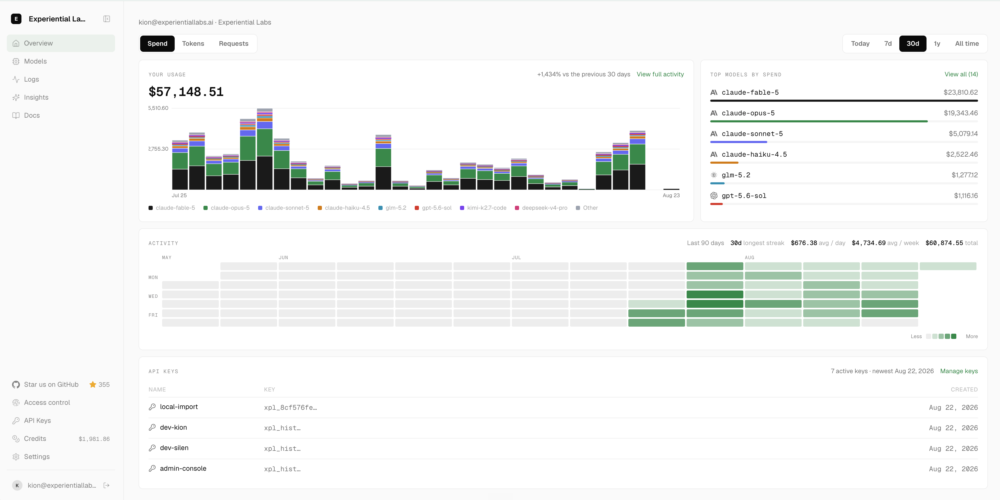
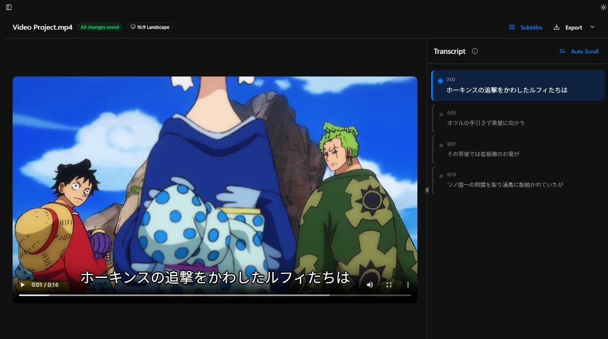

THE FRONT PAGE
EDITOR'S NOTE: We continue to trade architectural rigor for brute efficiency, yet somewhere beneath the layers of abstraction, clever engineering still finds a way to move the needle forward. #Model Efficiency and Architectural Constraints vs. Infrastructure Realities
BREAKING VECTORS
Prediction Markets and Sportsbooks Face the Same Insider Arbitrage Problem
Recent insider-trading scandals involving NBA player Terry Rozier and a White House teleprompter operator highlight how deeply liquidity enables modern betting markets. The open trade-off is clear: while legalizing these platforms makes suspicious volume trivial to detect, the necessary market depth is precisely what incentivizes high-stakes manipulation in the first place.
MODEL ARCHITECTURES
Talos Inserts a Permission Kernel Between Model Intent and Shell Execution
Talos decouples agent proposals from execution by forcing every terminal command through a deterministic security hypervisor with single-use authorization tokens. While it prevents rogue LLM tool calls from silently wiping local files, it shifts the burden back onto the developer, who must manually sign off on every unattended edge case.
LAB OUTPUTS

Open-Source Router Promises Continuous Model Improvement From Live Traffic
An open alternative to OpenRouter routes inference requests across multiple backends while using production traffic patterns to fine-tune future model iterations. The approach offers a path toward self-improving infrastructure, though routing overhead and data privacy trade-offs remain significant operational risks.
Tarsnap Founder Mocks AWS DX with File-System-Based Route 53 Interface
Colin Percival released Route 53 Files, a satire-meets-utility project exposing DNS zones as NFS mounts so shell utilities and AI agents can edit records directly. It removes API wrapper boilerplate, but introduces an unavoidable 90-second propagation delay and asynchronous error reporting via sidecar .error files.

SubSmith repurposes video libraries into language-learning tools
The tool automates subtitle generation and flashcard export from local media, substituting automated extraction for manual study prep. While it reduces friction for self-directed learners, it relies heavily on raw speech-to-text accuracy, where subtle translation errors can easily slip into daily practice.
INFERENCE CORNER